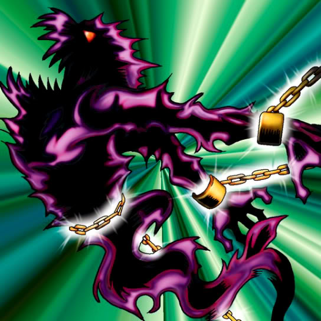

Binding Chain

Description: "While this card is face-up in the defense position, all WARRIOR monsters are spellbound."
STATS
ATK: 1000
DEF: 1100DECK COST
Deck Cost per Card: 26EFFECT NOT IMPLEMENTED
Fusion List (3 Possible Fusions)
- Binding Chain + Dancing Elf = Wing Egg Elf
- Binding Chain + Key Mace = Dark Witch
- Binding Chain + Mystical Elf = Dark Witch